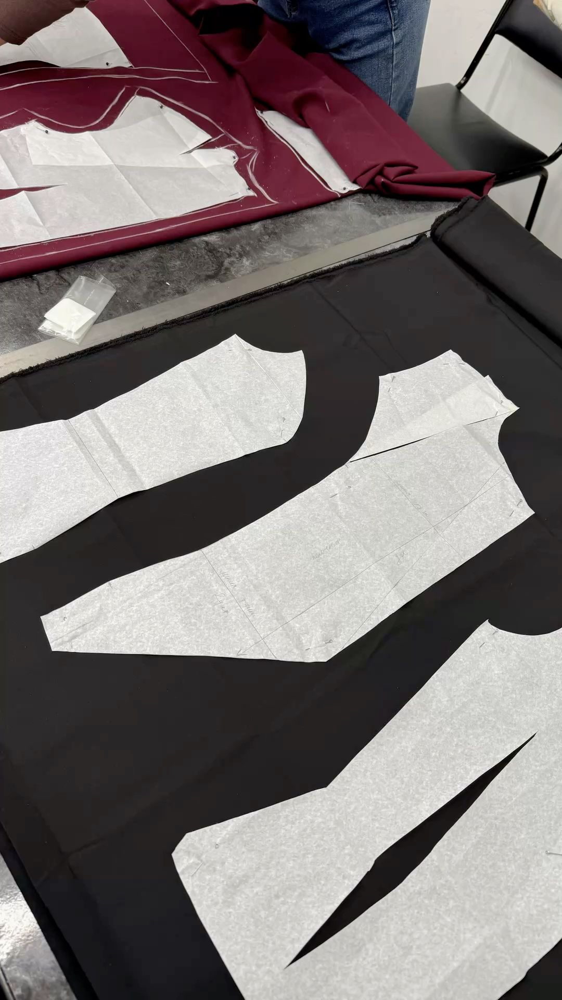

Fabric inspection
Shade, weight and fault check on incoming fabric.
Quality is not a final inspection at Droga Industries — it is a sign-off at each of the eight production stages, owned by one QC team from fabric roll to sealed carton.

Nothing moves to the next stage until the previous one is signed off.
Every incoming roll is checked for shade consistency, GSM, width and visible faults before it reaches the cutting table.
Fit sample and full size set are measured against the approved spec and confirmed with you before bulk cutting starts.
QC walks the line during production so stitching, seam and print faults are caught while the garment is still being made.
Finished garments are measured size by size against the spec sheet to confirm the batch is consistent end to end.
A statistical sample of the packed order is re-opened and inspected for stitching, sizing, print and finishing before dispatch.
Each checkpoint is recorded against the order so a shipment can be traced back to the roll it was cut from.
Clips from the checkpoints above, filmed on our production and finishing lines.
Shade, weight and fault check on incoming fabric.
QC walking the stitching line mid-run.
Faults caught while the garment is still on the line.
Size-by-size verification against the spec sheet.
Seam strength, stitch density and finishing.
Last check on the packed order before dispatch.
Registration and colour matching on screen print.
Poly-bagging and export cartoning.
Our QC procedures are written against the standards below, and audited by the bodies that issue them.

We can send physical samples along with the inspection record for the run they came from.